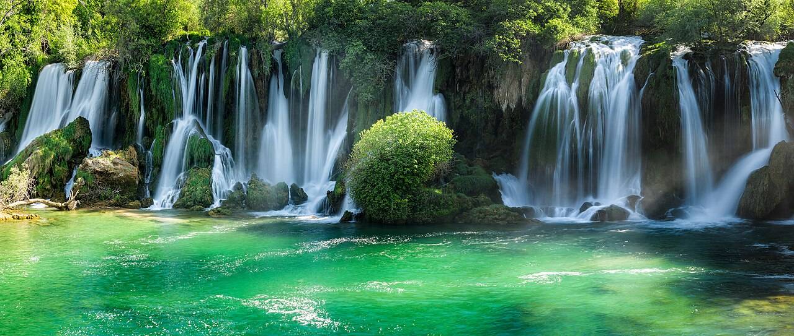
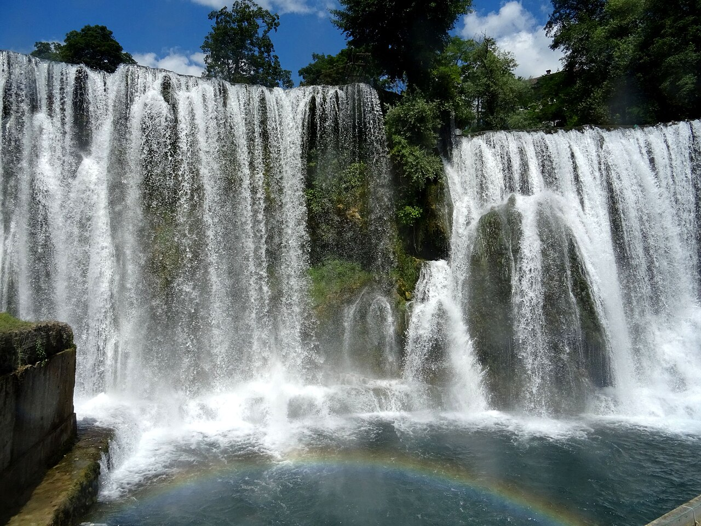
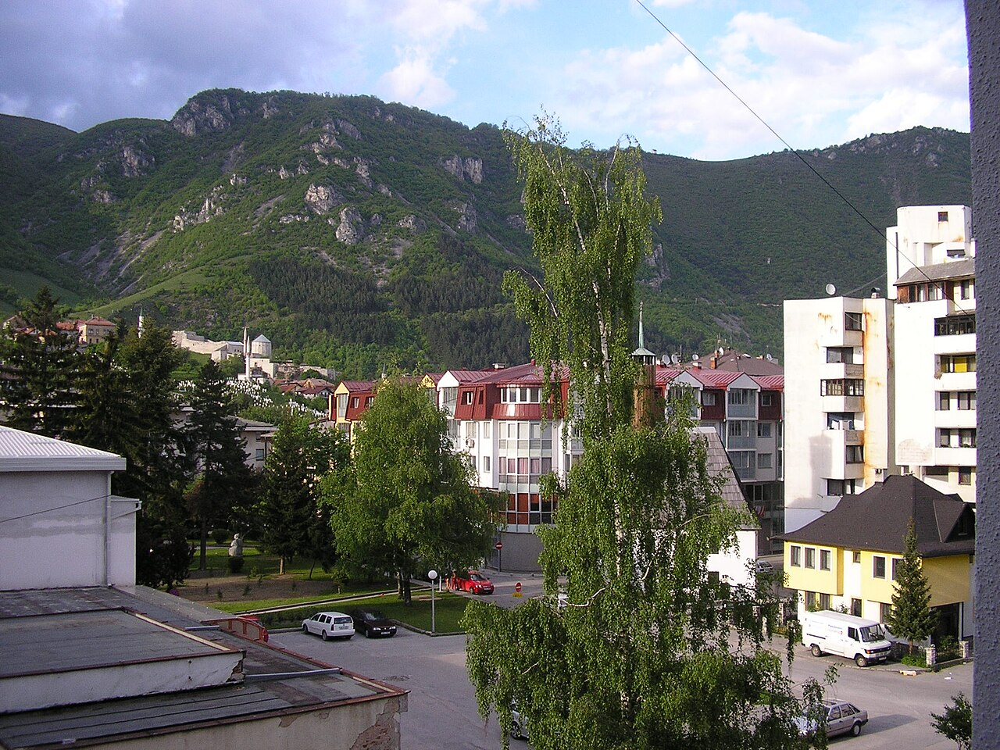
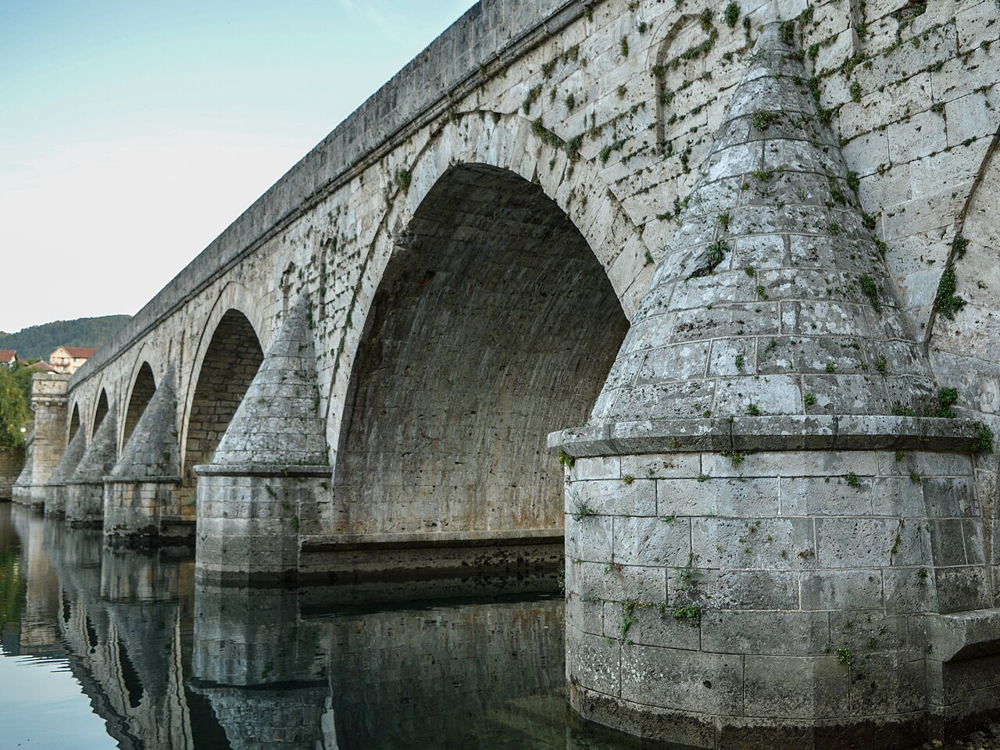
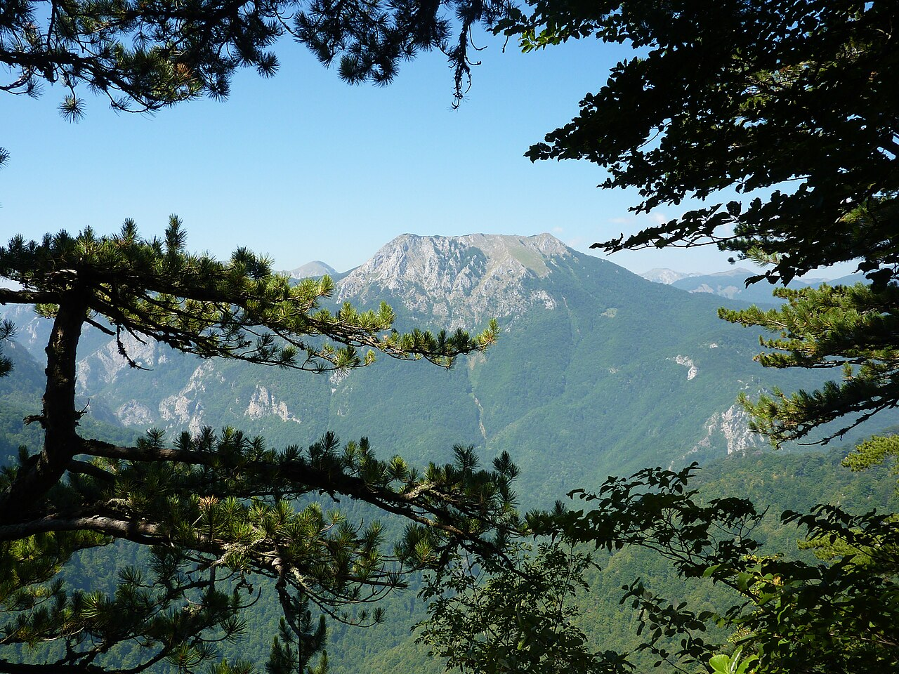
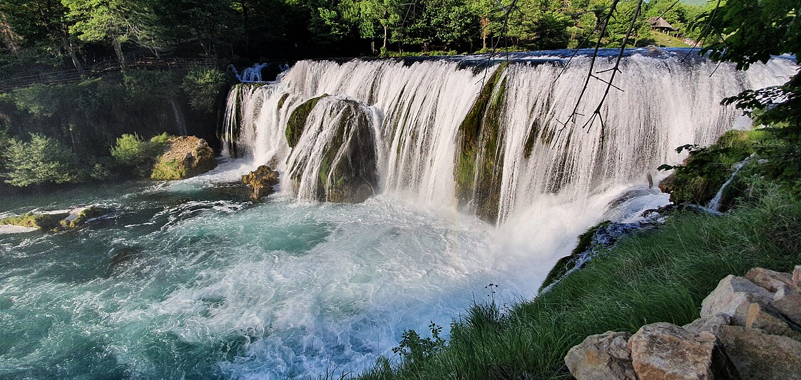
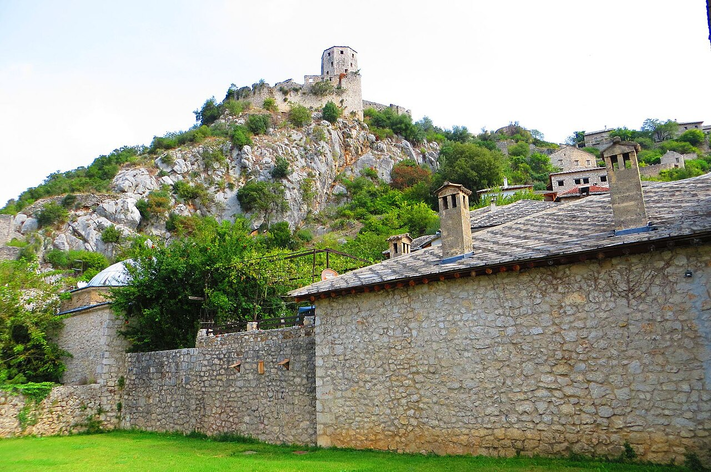
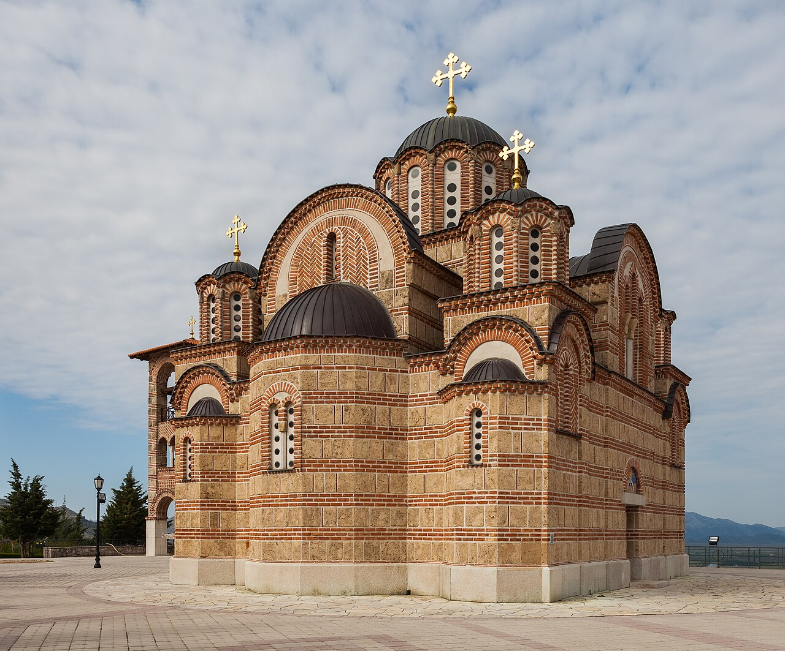
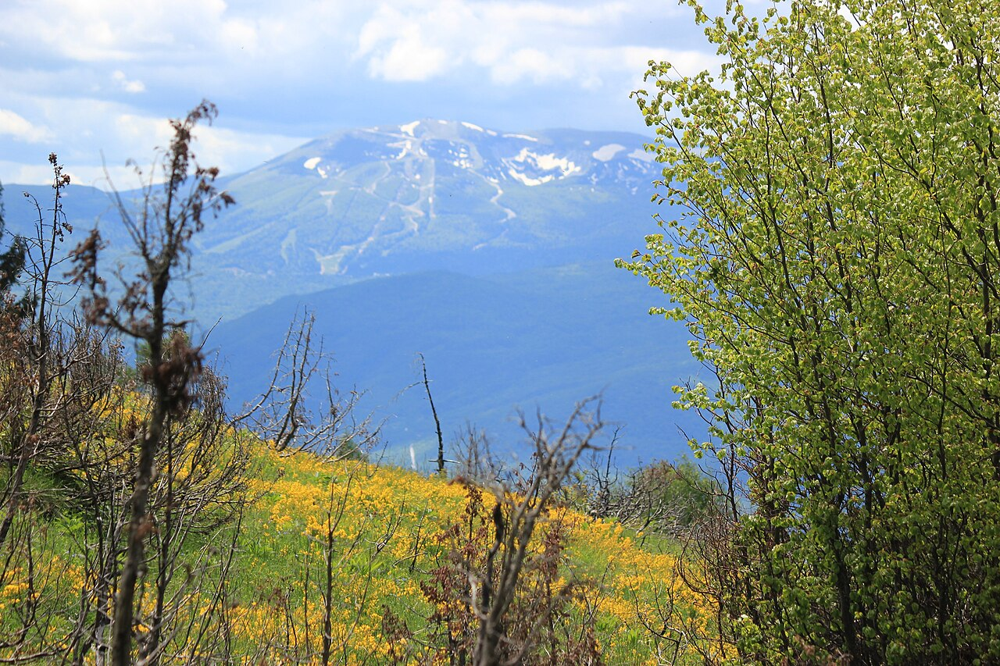

관광 명소 15곳
사진은 Wikimedia Commons에 공개된 실제 촬영본이며, 저작자와 라이선스를 각 사진 아래에 적었습니다. 촬영한 날씨·시기·구도에 따라 실제 모습은 다를 수 있습니다. 맞는 사진을 아직 찾지 못한 2곳은 비워 두었습니다.
-

사진: Justin W Flory · CC BY-SA 3.0 · Wikimedia Commons 바슈차르시야·세빌리 분수Baščaršija & Sebilj
오스만 시대 상업지구와 목조 세빌리 분수가 핵심인 옛 시장. 공예 골목, 모스크, 오스트리아-헝가리 건축으로 이어지는 거리를 비교하면 도시의 역사층위가 뚜렷해진다.
자세히 보기
-

사진: Tim Tregenza · CC BY-SA 3.0 · Wikimedia Commons 라틴교Latinska ćuprija / Latin Bridge
밀랴츠카강 위의 석교. 1914년 사라예보 사건의 무대가 된 곳 가까이에 있고 주변에 박물관이 있다. 사건이 일어난 때와 다리가 세워진 시기는 별개이다.
자세히 보기
-

사진: Berthold Werner · CC BY-SA 4.0 · Wikimedia Commons 모스타르 옛 다리Stari Most
16세기 오스만 시대의 다리가 1993년 전쟁 중 파괴된 뒤 2004년 복원되었다.
자세히 보기
-

사진: Dudva · CC0 · Wikimedia Commons 블라가이 수도원Blagaj Tekija
부나강 원류의 절벽 아래 자리한 수피 전통 수도시설. 짙은 청록색 수면과 흰 건물, 거대한 암벽을 함께 포착하는 것이 대표 이미지다.
자세히 보기
-

사진: john mcsporran from Trossachs, Scotland · CC BY 2.0 · Wikimedia Commons 크라비차 폭포Vodopad Kravica
트레비자트강의 넓게 펼쳐지는 석회암 폭포군. 여름 물놀이·수량·접근 규정은 계절과 운영기관에 따라 달라진다.
자세히 보기
-

사진: Whitepixels · CC0 · Wikimedia Commons 야이체 폭포Plivski vodopad
플리바강이 브르바스강으로 떨어지는 도시 한가운데의 폭포. 위쪽 성곽 구시가지와 물레방앗간도 함께 방문 대상이다.
자세히 보기
-

사진: Ivan_Ružić · CC BY-SA 3.0 · Wikimedia Commons 트라브니크 요새Stari grad Travnik
중부 보스니아의 오스만기 행정 중심지와 관련된 석조 성곽. 도시 전경과 컬러풀한 샤레나 모스크와 함께 둘러보는 코스로 알려져 있다.
자세히 보기
-

사진: Natashadjuric · CC BY-SA 4.0 · Wikimedia Commons 메흐메드 파샤 소콜로비치 다리Most Mehmed-paše Sokolovića
16세기 오스만의 건축가 시난이 설계한 드리나강 위 석교.
자세히 보기
-

사진: Erwan Martin from Plouzané, France · CC BY 2.0 · Wikimedia Commons 수체스카 국립공원·페루치차NP Sutjeska / Perućica
디나르 알프스의 원시림과 마글리치 산 등반 거점. 페루치차 보호구역은 허가·가이드 등 접근 제한을 확인해야 한다.
자세히 보기
-

사진: Igorbeslic · CC BY-SA 4.0 · Wikimedia Commons 우나 국립공원·슈트르바치키 부크NP Una / Štrbački buk
초록빛 우나강과 큰 계단식 폭포가 특징. 강변 액티비티가 인기지만 자연보호 구역에는 별도의 안전수칙이 있다.
자세히 보기
-

사진: Mister No · CC BY 3.0 · Wikimedia Commons 포치텔리 역사마을Počitelj
언덕을 따라 이어지는 오스만기 석조 마을·시계탑·성벽.
자세히 보기
-

사진: Diego Delso · CC BY-SA 3.0 · Wikimedia Commons 트레비네 구시가지·아르슬라나기치 다리Trebinje / Arslanagića most
남동부의 지중해성 기후, 플라타너스 광장, 석조 다리 등이 특징이다. 여름 야외시장과 주변 와인 산지도 함께 찾는 곳이다.
자세히 보기
-
사진 준비 중
맞는 사진을 구하는 대로 채웁니다. 다른 사진으로 대신하지 않습니다. 코니츠 옛 다리Stara kamena ćuprija Konjic
네레트바강 상류를 가로지르는 복원 석교. 전통 목공, 래프팅, 산악관광으로 가는 길목이기도 하다.
자세히 보기
-
사진 준비 중
맞는 사진을 구하는 대로 채웁니다. 다른 사진으로 대신하지 않습니다. 비소코 중세유산과 유적지Visoko / Stari grad Visoki
중세 보스니아와 관련된 지역이다. 이른바 '보스니아 피라미드' 주장은 주류 고고학계에서 입증되지 않았다.
자세히 보기
-

사진: Julian Nyča · CC BY-SA 3.0 · Wikimedia Commons 비엘라슈니차 산Bjelašnica
1984년 사라예보 동계올림픽과 연결되는 산악 스포츠 지역. 겨울철 운영과 기상, 하이킹 난도는 시기마다 달라진다.
자세히 보기
여행 전에 확인하세요
운영시간·입장료·예약·개방 여부는 계절과 상황에 따라 바뀝니다. 방문 전에 각 명소의 공식 안내에서 다시 확인하세요.
쇼핑·기념품
13개 추천 상품사진 3개 확보
보스니아 헤르체고비나 쇼핑의 중심은 커피 문화입니다. 사라예보 바슈차르시야에서 동 커피포트와 로쿰을, 모스타르에서 토착 품종 와인과 무화과를 사면 두 도시의 분위기를 함께 담아 올 수 있습니다.
대표 TOP 3
카테고리별 전체 상품
카드를 누르면 자세한 설명·구매처·반입 유의사항·사진 출처를 볼 수 있습니다. 가격은 검증된 자료가 없어 싣지 않았고, 구매처는 2026.11.23 기준 정리라 바뀔 수 있습니다. 반입 규정은 관세청·농림축산검역본부 안내를 요약한 것으로 최종 판단은 입국 시 세관에서 합니다.